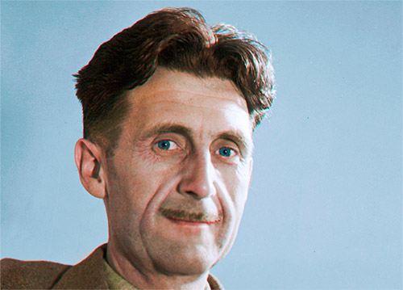

George Orwell
Eric Arthur Blair, más conocido por el pseudónimo literario George Orwell (25 de junio del 1903 - 21 de enero del 1950), fue un escritor y periodista inglés. Su corpus literario se caracteriza por la claridad, la inteligencia y el ingenio, y por el conocimiento de la injusticia social, la oposición al totalitarismo y el compromiso con el socialismo democrático.
Es considerado como uno de los mejores cronistas, si no el mejor, de la cultura inglesa del siglo XX. También escribió crítica literaria, poesía y ficción, el hizo periodismo polémico. Orwell es conocido principalmente por la novela alegórica La rebelión de los animales (1945) y por la novela distópica 1984 (1949); de este par de libros se han vendido más copias que de cualquier otro par de libros de cualquier otro autor del siglo XX. De entre el resto de su corpus creativo, también destaca su libro, ampliamente aclamado, Homenaje a Cataluña (1938), en que relata su experiencia en la Guerra Civil española. Orwell también escribió numerosos ensayos políticos, literarios y culturales.
Las obras de Orwell han influenciado la cultura popular y política, y el término orwelliano –describe prácticas sociales totalitarias o autoritarias– se ha introducido en la lengua juntamente con diversos neologismos tales como guerra fría, doblepensar, Gran Hermano, policía del pensamiento.